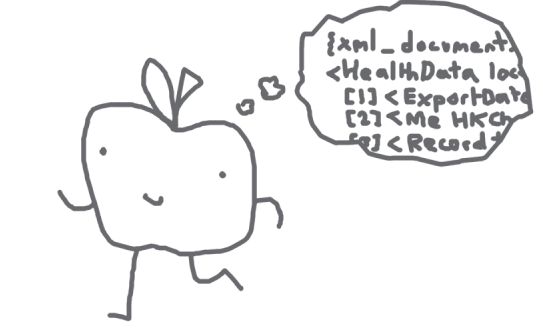
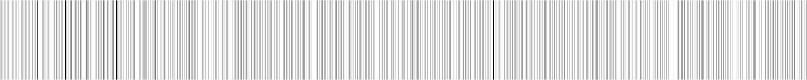
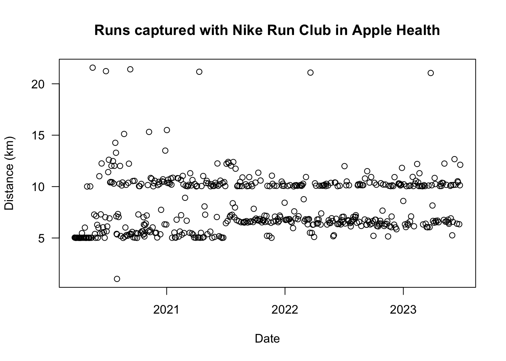

get_run_distances <- function(zip_path) {
# Unzip Apple Health export to temporary location
message("Unzipping and reading XML")
temp <- tempdir()
unzip(zipfile = zip_path, exdir = temp)
xml_in <- xml2::read_xml(file.path(temp, "apple_health_export", "export.xml"))
unlink(temp)
# Isolate workouts only and convert to an R list object
message("Isolating workouts from XML")
wo_in <- xml2::xml_find_all(xml_in, "//Workout") |> xml2::as_list()
# Pre-allocate a list to be filled with output data
wo_total <- length(wo_in)
wo_out <- vector("list", wo_total)
# For each viable workout, extract the details
message("Iterating over workouts to extract run data")
for (wo_n in seq(wo_total)) {
# Extract details for current workout
wo <- wo_in[[wo_n]]
wo_attrs <- attributes(wo) # the data is stored as attributes
is_run <-
wo_attrs[["workoutActivityType"]] == "HKWorkoutActivityTypeRunning"
# If the workout wasn't a run, then skip to the next workout
if (!is_run) next
# if it is a run, then extract the data to a single-row dataframe
if (is_run) {
# There can be more than one element named 'WorkoutStatistics'. We want to
# get the one with distance information and extract the details.
wo_stats <- wo[grep("WorkoutStatistics", names(wo))]
wo_stats_types <- lapply(wo_stats, \(x) attr(x, c("type")))
dist_type <- "HKQuantityTypeIdentifierDistanceWalkingRunning"
dist_index <- which(wo_stats_types == dist_type)
wo_dist <- wo_stats[[dist_index]]
# Prepare single-row dataframe and add to the pre-allocated list
wo_details <- data.frame(
source = wo_attrs[["sourceName"]],
start = as.POSIXct(wo_attrs[["startDate"]]),
end = as.POSIXct(wo_attrs[["endDate"]]),
distance_km = attr(wo_dist, "sum") |> as.numeric() |> round(2)
)
wo_details[["duration_s"]] <-
as.numeric(wo_details[["end"]] - wo_details[["start"]], units = "secs")
wo_out[[wo_n]] <- wo_details
}
}
# Convert to dataframe, select columns
message("Combining data")
wo_out_df <- do.call(rbind, wo_out)
wo_out_df[, c("source", "start", "end", "duration_s", "distance_km")]
}
tl;dr
You can use R to extract running details from a downloaded of your Apple Health data. The format of the data has changed since I last tried this, so I re-wrote my code.
On your marks
In 2021 I extracted my running activities from my Apple Health data using the {xml2} package. You can read there for some theory and background.
At that point I’d been running for one year. I’m nearly at 500 runs, so I thought I would re-execute my code with the latest data. Alas, the original code no longer works because Apple seems to have updated the format of the XML file they provide.
Note
I have since re-rendered this post after passing 500 runs.
So I’ve written a new function that takes a path to the zipped download of my Apple Health data and outputs a dataframe of time and distance data, with one row per run.
Get set
I followed the same steps as before to get my Apple Health data off my phone.
I smashed together a quick function to unzip the file to a temporary location and then extract workout data using the the {xml2} package. There’s a bit of base R wrangling to output a dataframe with a row per run workout, focusing on total time and distance.
Click to expand the function definition
I won’t go through it line by line, but there’s some commentary to explain what’s happening at each step. It does what I need it to do for now, but no doubt there’s some refactoring to be done.
There’s a few things to note:
- I’m more comfortable handling R objects, so I converted early to a list with
xml2::as_list(). Awkwardly, the data in the list object was stored as attributes to each element. - The distance data is stored in an element called ‘WorkoutStatistics’, but more than one element will have this name. We first have to isolate the element that is of the correct type, which has the name ‘HKQuantityTypeIdentifierDistanceWalkingRunning’.
- I converted the start and end variables to datetime class (POSIXct) and subtracted one from the other to get the duration of the run. This yields the ‘difftime’ class that can be converted to seconds with
as.numeric()and the argumentunits = "secs". - There’s no input handling, because this was quick and for ‘fun’, lol.
Go
So, to use the function you pass a path to where your zipped Apple Health export lives. Mine is in my ‘Documents’ folder.
runs <- get_run_distances("~/Documents/data/export.zip")Unzipping and reading XMLIsolating workouts from XMLIterating over workouts to extract run dataCombining dataI recorded all my runs with the Nike Run Club app, so I’ll filter out duplicates where I dual-recorded with Apple’s Workout app. I think I accidentally started the app by mistake a couple of times, so we’ll only grab runs of over 1 km. I’ll also convert the seconds to a friendlier-looking ‘period’ class using {lubridate}1.
Here’s the most recent few:
runs <- runs[runs$source == "Nike Run Club" & runs$distance_km > 1, ]
runs$duration <- lubridate::seconds_to_period(runs$duration_s)
runs <- runs[, c("start", "distance_km", "duration")]
row.names(runs) <- NULL
tail(runs) start distance_km duration
497 2023-06-15 08:45:46 6.39 30M 36S
498 2023-06-17 11:07:03 10.52 50M 58S
499 2023-06-18 10:36:58 10.42 51M 29S
500 2023-06-22 08:14:51 6.34 30M 43S
501 2023-06-24 08:47:05 10.13 48M 43S
502 2023-06-25 09:20:20 12.12 59M 48SFor my own tracking purposes, I’ve run:
- 502 times
- for a total distance of 4119 km
- for a total duration of about 14 days
And I can recreate a couple of the plots from the old post while we’re here. Here’s the ‘run barcode’, with one vertical line per run (the darker it is the greater the distance):
library(dplyr, warn.conflicts = FALSE)
library(tidyr)
run_days <- left_join(
data.frame(date = as_date(ymd("2020-03-23"):ymd("2023-06-25"))),
runs |>
transmute(date = ymd(as_date(start)), km = distance_km, duration) |>
filter(date >= "2020-03-23" & date <= "2023-06-25") |>
group_by(date) |>
summarise(km = sum(km), .groups = "drop"),
by = "date"
) |>
replace_na(list(run = 0))
par(mar = rep(0, 4))
image(matrix(run_days$km), col = grey.colors(11, 0.8, 0))
box(col = "white")
And of course, a simple distance over time plot:
plot(
x = runs$start,
y = runs$distance_km,
las = 1, # rotate y-axis labels
main = "Runs captured with Nike Run Club in Apple Health",
xlab = "Date",
ylab = "Distance (km)"
)
Some patterns are obvious. For example, there’s lots of 5 km runs until about mid-2021, when it hops to more like 7 km. That’s when I started running for 30 mins at a time, rather than for 5 km specifically.
I’m pretty happy at 5 and 10 km, obviously, but maybe I should do more 21.1 km half-marathons. Or a full marathon? No no, that’s foolish: it would expand my y-axis too much and make it harder to observe patterns at shorter distances, amirite.
Environment
Session info
Last rendered: 2023-07-21 19:29:55 BSTR version 4.3.1 (2023-06-16)
Platform: aarch64-apple-darwin20 (64-bit)
Running under: macOS Ventura 13.2.1
Matrix products: default
BLAS: /Library/Frameworks/R.framework/Versions/4.3-arm64/Resources/lib/libRblas.0.dylib
LAPACK: /Library/Frameworks/R.framework/Versions/4.3-arm64/Resources/lib/libRlapack.dylib; LAPACK version 3.11.0
locale:
[1] en_US.UTF-8/en_US.UTF-8/en_US.UTF-8/C/en_US.UTF-8/en_US.UTF-8
time zone: Europe/London
tzcode source: internal
attached base packages:
[1] stats graphics grDevices utils datasets methods base
other attached packages:
[1] tidyr_1.3.0 dplyr_1.1.2 lubridate_1.9.2
loaded via a namespace (and not attached):
[1] vctrs_0.6.3 cli_3.6.1 knitr_1.43.1 rlang_1.1.1
[5] xfun_0.39 purrr_1.0.1 generics_0.1.3 jsonlite_1.8.7
[9] glue_1.6.2 htmltools_0.5.5 fansi_1.0.4 rmarkdown_2.23
[13] evaluate_0.21 tibble_3.2.1 fontawesome_0.5.1 fastmap_1.1.1
[17] yaml_2.3.7 lifecycle_1.0.3 compiler_4.3.1 htmlwidgets_1.6.2
[21] timechange_0.2.0 pkgconfig_2.0.3 rstudioapi_0.15.0 digest_0.6.33
[25] R6_2.5.1 tidyselect_1.2.0 utf8_1.2.3 pillar_1.9.0
[29] magrittr_2.0.3 tools_4.3.1 xml2_1.3.5 Reuse
CC BY-NC-SA 4.0